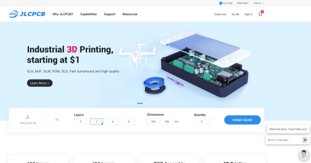
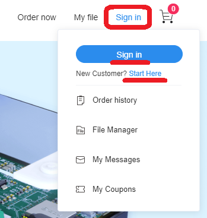

JLCPCB の 3Dプリントサービスを使って CASIO MX-101 スロットカバーを作る (2022年9月23日現在)
≪3Dプリントデータを用意する≫
JLCPCB では、出力対象となる形状データを STL形式 で用意すれば対応してくれます。
Fusion360 (生成物を商用利用不可な制約がある無償版あり。)で、mm単位にして出力した STL形式がそのまま使えますが、
MX-101 のスロットカバーは、下記の場所にすでに存在していますので、ありがたく使わせていただくことにします。
[外部サイト] cgtrader 3D Models SnowCrystaさんの作品
有益なデータを無料で公開して下さっている SnowCrystaさん に感謝です。
上記サイトから、STLファイルをダウンロードして下さい。これで準備完了です。
ネットで公開されている STLデータを JLCPCB にそのまま投入すると、１辺が 10倍や 100倍のサイズになってしまうことがあります。
3D-CADツールの m, cm, mm単位の違いなどがあるのかもしれませんが、何が原因でこうなるのかは私は知りません (^^;
そんなケースがあるということを頭の片隅に覚えておいて下さい。
では、次に JLCPCB のサイトに繋げます。
[外部サイト] JLCPCB.com

[JLCPCB TOP画面]
右上にある Sign in をクリックすると、下記のようなメニューが出てくるので、すでにアカウントがあれば sign in をクリックして進んで下さい。
初めての場合はアカウントを作る必要があります。New customer? のところの Start here をクリックして、アカウントを作成して下さい。

[JLCPCB Sign in]
[前へ] [次へ]